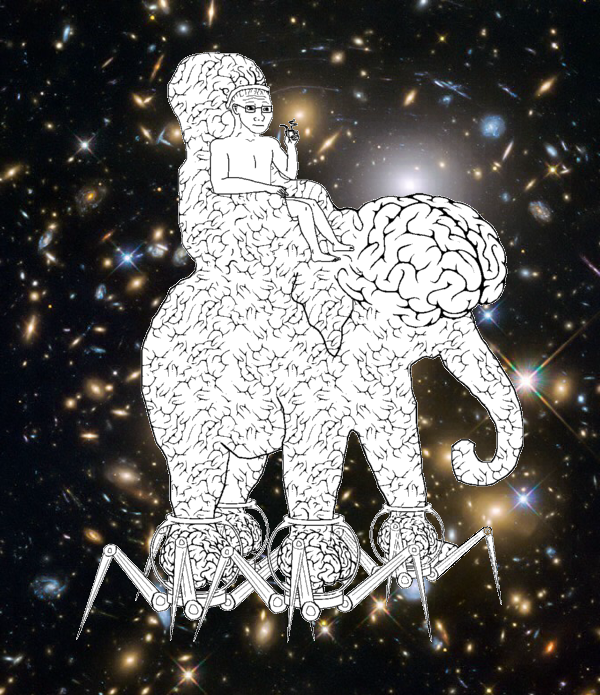

Dont' worry you weren't actually hacked. This is just a demonstration of you being tricked into clicking a link and a possible scenario of malicious code ran on your computer...
Don't allow unescaped user-input into functions like: innerHTML, v-html, th:utext, etc.
